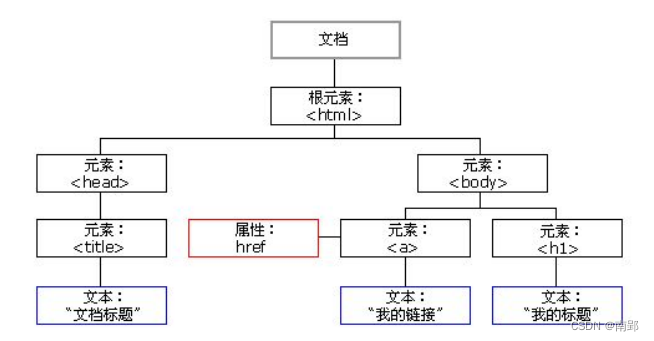
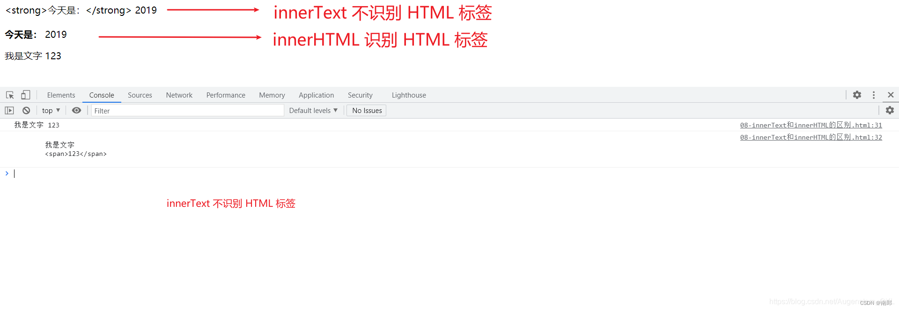
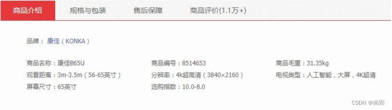
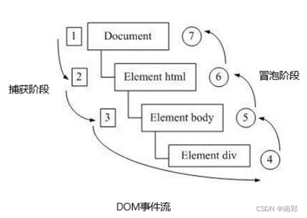
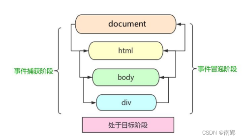

一、DOM 简介
文档对象模型（Document Object Model，简称 DOM），是 W3C 组织推荐的处理可扩展标记语言（HTML或者XML）的标准编程接口
W3C 已经定义了一系列的 DOM 接口，通过这些 DOM 接口可以改变网页的内容、结构和样式。

- 文档：一个页面就是一个文档，DOM中使用doucument来表示
- 元素：页面中的所有标签都是元素，DOM中使用 element 表示
- 节点：网页中的所有内容都是节点（标签，属性，文本，注释等），DOM中使用node表示
DOM 把以上内容都看做是==对象==
二、获取元素
获取页面中的元素可以使用以下几种方式:
- 根据 ID 获取
- 根据标签名获取
- 通过 HTML5 新增的方法获取
- 特殊元素获取
1. 根据 ID 获取
使用 getElementByld() 方法可以获取带ID的元素对象
doucument.getElementByld('id名');使用 console.dir() 可以打印我们获取的元素对象，更好的查看对象里面的属性和方法。
2. 根据标签名获取
根据标签名获取，使用 getElementByTagName() 方法可以返回带有指定标签名的对象的集合
doucument.getElementsByTagName('标签名');- 返回的是获取过来元素对象的集合，以伪数组的形式存储。我们想要操作里面的元素就需要遍历
- 得到元素对象是动态的
- 如果获取不到元素，则返回为空的伪数组
==ps：==
可以根据标签名获取某个元素（父元素）内部所有指定标签名的子元素
element.getElementsByTagName('标签名')
ol.getElementsByTagName('li');3. 通过H5新增方法获取
3.1 getElementsByClassName
根据类名返回元素对象合集
document.getElementsByClassName('类名'); 3.2 document.querySelector
根据指定选择器返回第一个元素对象
document.querySelector('选择器');
// 切记里面的选择器需要加符号
// 类选择器.box
// id选择器 #nav
var firstBox = document.querySelector('.box');3.3 document.querySelectorAll
根据指定选择器返回所有元素对象
document.querySelectorAll('选择器');4. 获取特殊元素
4.1 获取 body 元素
返回body元素对象
document.body;4.2 获取 html 元素
返回html元素对象
document.documentElement;三、事件基础
JavaScript 使我们有能力创建动态页面，而事件是可以被 JavaScript 侦测到的行为。
简单理解： 触发 – 响应机制。
网页中的每个元素都可以产生某些可以触发 JavaScript 的事件，例如，我们可以在用户点击某按钮时产生一个事件，然后去执行某些操作。
1. 事件三要素
- 事件源（谁）
- 事件类型（什么事件）
- 事件处理程序（做啥）
<script>
// 点击一个按钮，弹出对话框
// 1. 事件是有三部分组成 事件源 事件类型 事件处理程序 我们也称为事件三要素
//(1) 事件源 事件被触发的对象 谁 按钮
var btn = document.getElementById('btn');
//(2) 事件类型 如何触发 什么事件 比如鼠标点击(onclick) 还是鼠标经过 还是键盘按下
//(3) 事件处理程序 通过一个函数赋值的方式 完成
btn.onclick = function() {
alert('点秋香');
}
</script>2. 执行事件的步骤
- 获取事件源
- 注册事件(绑定事件)
- 添加事件处理程序(采取函数赋值形式)
<script>
// 执行事件步骤
// 点击div 控制台输出 我被选中了
// 1. 获取事件源
var div = document.querySelector('div');
// 2.绑定事件 注册事件
// div.onclick
// 3.添加事件处理程序
div.onclick = function() {
console.log('我被选中了');
}
</script>3. 鼠标事件
| 鼠标事件 | 触发条件 |
|---|---|
onclick |
鼠标点击左键触发 |
onmouseover |
鼠标经过触发 |
onmouseout |
鼠标离开触发 |
onfocus |
获得鼠标焦点触发 |
onblur |
失去鼠标焦点触发 |
onmousemove |
鼠标移动触发 |
onmousedown |
鼠标按下触发 |
onmouseup |
鼠标弹起触发 |
四、操作元素
JavaScript 的 DOM 操作可以改变网页内容、结构和样式，我们可以利用 DOM 操作元素来改变元素里面的内容 、属性等。
1. 改变元素内容
- 从起始位置到终止位置的内容，但它会去掉html标签，同时去掉空格和换行。
element.innerText- 起始位置到终止位置的全部内容，包括html标签，同时保留空格和换行
element.innerHTML<body>
<div></div>
<p>
我是文字
<span>123</span>
</p>
<script>
// innerText 和 innerHTML的区别
// 1. innerText 不识别html标签,去除空格和换行
var div = document.querySelector('div');
div.innerText = '<strong>今天是：</strong> 2019';
// 2. innerHTML 识别html标签 保留空格和换行的
div.innerHTML = '<strong>今天是：</strong> 2019';
// 这两个属性是可读写的 可以获取元素里面的内容
var p = document.querySelector('p');
console.log(p.innerText);
console.log(p.innerHTML);
</script>
</body>
2. 改变元素属性
常用元素的属性操作
innerText、innerHTML改变元素内容src、hrefid、alt、title- 表单元素属性
type, value, checked, selected, disabled
// img.属性
img.src = "xxx";
input.value = "xxx";
input.type = "xxx";
input.checked = "xxx";
input.selected = true / false;
input.disabled = true / false;3. 改变样式属性
我们可以通过 JS 修改元素的大小、颜色、位置等样式。
- 行内样式操作
// element.style
div.style.backgroundColor = 'pink';
div.style.width = '250px';- 类名样式操作
// element.className
div.className = 'wrong'注意：
- JS里面的样式采取驼峰命名法，比如 fontSize ，backgroundColor
- JS 修改 style 样式操作 ，产生的是行内样式，权重比较高
- ==如果样式修改较多，可以采取操作类名方式更改元素样式==
- className 会直接更改元素的类名，会覆盖原先的类名
案例：用户如果离开密码框，里面输入个数不是6~16，则提示错误信息，否则提示输入正确信息
<style>
div {
width: 600px;
margin: 100px auto;
}
.message {
display: inline-block;
font-size: 12px;
color: #999;
background: url(images/mess.png) no-repeat left center;
padding-left: 20px;
}
// 样式用类名封装
.wrong {
color: red;
background-image: url(images/wrong.png);
}
// 样式用类名封装
.right {
color: green;
background-image: url(images/right.png);
}
</style>
<body>
<div class="register">
<input type="password" class="ipt">
<p class="message">请输入6~16位密码</p>
</div>
<script>
var ipt = document.querySelector('.ipt');
var message = document.querySelector('.message');
ipt.onblur = function () {
if (ipt.value.length < 6 || ipt.value.length > 16) {
message.className = 'message wrong'; // 直接更改类名
message.innerHTML = '您输入的位数不对';
} else {
message.className = 'message right'; // 直接更改类名
message.innerHTML = '密码符合条件';
}
}
</script>
</body>4. 排他思想
如果有同一组元素，我们相要某一个元素实现某种样式，需要用到循环的排他思想算法：
- 所有元素全部清除样式（干掉其他人）
- 给当前元素设置样式 （留下我自己）
- 注意顺序不能颠倒，首先干掉其他人，再设置自己
<body>
<button>按钮1</button>
<button>按钮2</button>
<button>按钮3</button>
<button>按钮4</button>
<button>按钮5</button>
<script>
// 1. 获取所有按钮元素
var btns = document.getElementsByTagName('button');
// btns得到的是伪数组 里面的每一个元素 btns[i]
for (var i = 0; i < btns.length; i++) {
btns[i].onclick = function() {
// (1) 我们先把所有的按钮背景颜色去掉 干掉所有人
for (var i = 0; i < btns.length; i++) {
btns[i].style.backgroundColor = '';
}
// (2) 然后才让当前的元素背景颜色为pink 留下我自己
this.style.backgroundColor = 'pink';
}
}
//2. 首先先排除其他人，然后才设置自己的样式 这种排除其他人的思想我们成为排他思想
</script>
</body>5. 自定义属性
5.1 获取属性值
- 获取内置属性值(元素本身自带的属性)
element.属性;- 获取自定义的属性
element.getAttribute('属性');5.2 设置属性值
- 设置内置属性值
element.属性 = '值';- 主要设置自定义的属性
element.setAttribute('属性','值');5.3 移除属性
element.removeAttribute('属性');案例：tab 栏切换
当鼠标点击上面相应的选项卡（tab），下面内容跟随变化

核心思路：
- 给上面的tab_list 里面的所有小li 添加自定义属性，属性值从0开始编号。
- 当我们点击tab_list 里面的某个小li，让tab_con 里面对应序号的内容显示，其余隐藏（排他 思想）
<script>
var lis = document.querySelector('.tab_list').querySelectorAll('li');//获取tab切换栏
var items = document.querySelectorAll('.item');//获取各个tab下的内容
for (var i = 0; i < lis.length; i++) {
lis[i].setAttribute('index', i);// 给每个tab栏添加序号属性
lis[i].onclick = function () {
for (var i = 0; i < lis.length; i++) {
lis[i].className = '';
items[i].style.display = 'none';
} // 排他思想
this.className = 'current'; // 选中点击的此tab
var index = this.getAttribute('index');
items[index].style.display = 'block'; // 匹配
}
}
</script>H5 规定自定义属性
自定义属性目的：
- 保存并保存数据，有些数据可以保存到页面中而不用保存到数据库中
- 有些自定义属性很容易引起歧义，不容易判断到底是内置属性还是自定义的
H5规定自定义属性 data-开头作为属性名并赋值
<div data-index = "1"></div>
// 或者使用JavaScript设置
div.setAttribute('data-index',1);- 兼容性获取
element.getAttribute('data-index') - H5新增的：
element.dataset.index或element.dataset['index']IE11才开始支持
五、节点操作
获取元素通常使用两种方式:
利用DOM提供的方法获取元素，缺点：逻辑性不强、繁琐
document.getElementByld()document.getElementsByTagName()document.querySelector()
利用 节点层级关系 获取元素
- 利用父子兄节点关系获取元素
- 优点：逻辑性强
- 缺点：兼容性稍差
1. 节点概述
网页中的所有内容都是节点（标签、属性、文本、注释等），在DOM 中，节点使用 node 来表示。
HTML DOM 树中的所有节点均可通过 JavaScript 进行访问，所有 HTML 元素（节点）均可被修改，也可以创建或删除。
一般的，节点至少拥有nodeType（节点类型）、nodeName（节点名称）和nodeValue（节点值）这三个基本属性。
- 元素节点：nodeType 为1
- 属性节点：nodeType 为2
- 文本节点：nodeType 为3(文本节点包括文字、空格、换行等)
我们在实际开发中，节点操作主要操作的是元素节点。
2. 节点层级
利用 DOM 树可以把节点划分为不同的层级关系，常见的是父子兄层级关系。
2.1 父级节点
node.parentNodeparentNode属性可以返回某节点的父结点，注意是最近的一个父结点- 如果指定的节点没有父结点则返回null
2.2 子结点
parentNode.childNodes(标准)parentNode.childNodes返回包含指定节点的子节点的集合，该集合为即时更新的集合- 返回值包含了所有的子结点，包括元素节点，文本节点等
- 如果只想要获得里面的元素节点，则需要专门处理。所以我们一般不提倡使用
childNodes
parentNode.children(非标准)parentNode.children是一个只读属性，返回所有的子元素节点- 它只返回子元素节点，其余节点不返回 （这个是我们重点掌握的）
- 虽然 children 是一个非标准，但是得到了各个浏览器的支持，因此我们可以放心使用
<body>
<div>我是div</div>
<span>我是span</span>
<ul>
<li>我是li</li>
<li>我是li</li>
<li>我是li</li>
<li>我是li</li>
</ul>
<ol>
<li>我是li</li>
<li>我是li</li>
<li>我是li</li>
<li>我是li</li>
</ol>
<div class="demo">
<div class="box">
<span class="erweima">×</span>
</div>
</div>
<script>
// 1. 父节点 parentNode
var erweima = document.querySelector('.erweima');
console.log(erweima.parentNode); //得到的是离元素最近的父级节点(亲爸爸)box
var ul = document.querySelector('ul');
// 1. 子节点 childNodes 所有的子节点 包含 元素节点 文本节点等等
console.log(ul.childNodes);
// 2. children 获取所有的子元素节点 也是我们实际开发常用的
console.log(ul.children);
</script>
</body>2.2.1 第一个子结点
parentNode.firstChildfirstChild返回第一个子节点，找不到则返回null- 同样，也是包含所有的节点（空格、换行）
parentNode.firstElementChildfirstElementChild返回第一个子元素节点，找不到则返回null
2.2.2 最后一个子结点
parentNode.lastChildlastChild返回最后一个子节点，找不到则返回null- 同样，也是包含所有的节点（空格、换行）
parentNode.lastElementChildlastElementChild返回最后一个子元素节点，找不到则返回null
2.3 兄弟节点
2.3.1 下一个兄弟节点
node.nextSiblingnextSibling返回当前元素的下一个兄弟元素节点，找不到则返回null- 同样，也是包含所有的节点
node.nextElementSiblingnextElementSibling返回当前元素下一个兄弟元素节点，找不到则返回null
2.3.2 上一个兄弟节点
node.previousSiblingpreviousSibling返回当前元素上一个兄弟元素节点，找不到则返回null- 同样，也是包含所有的节点
node.previousElementSiblingpreviousElementSibling返回当前元素上一个兄弟元素节点，找不到则返回null
3. 创建节点
document.createElement('tagName');document.createElement()方法创建由 tagName 指定的HTML 元素- 因为这些元素原先不存在，是根据我们的需求动态生成的，所以我们也称为动态创建元素节点
3.1 添加节点
node.appendChild(child)node.appendChild()方法将一个节点添加到指定父节点的子节点列表末尾。类似于 CSS 里面的 after 伪元素。
node.insertBefore(child,指定元素)node.insertBefore()方法将一个节点添加到父节点的指定子节点前面。类似于 CSS 里面的 before 伪元素。
3.2 删除节点
node.removeChild(child)node.removeChild()方法从 DOM 中删除一个子节点，返回删除的节点
3.3 复制节点(克隆节点)
node.cloneNode()node.cloneNode()方法返回调用该方法的节点的一个副本。 也称为克隆节点/拷贝节点- 如果括号参数为空或者 false ，则是浅拷贝，即只克隆复制节点本身，不克隆里面的子节点
- 如果括号参数为 true ，则是深拷贝，会复制节点==本身以及里面所有的子节点==
面试题
三种动态创建元素的区别
- doucument.write()
- element.innerHTML
- document.createElement()
区别：
document.write()是直接将内容写入页面的内容流，但是文档流执行完毕，则它会导致页面全部重绘innerHTML是将内容写入某个 DOM 节点，不会导致页面全部重绘innerHTML创建多个元素效率更高（不要拼接字符串，采取数组形式拼接），结构稍微复杂
createElement()创建多个元素效率稍低一点点，但是结构更清晰
<body>
<div class="innner"></div>
<div class="create"></div>
<script>
// 2. innerHTML 创建元素
var inner = document.querySelector('.inner');
// 2.1 innerHTML 用拼接字符串方法
for (var i = 0; i <= 100; i++) {
inner.innerHTML += '<a href="#">百度</a>';
}
// 2.2 innerHTML 用数组形式拼接
var arr = [];
for (var i = 0; i <= 100; i++) {
arr.push('<a href="#">百度</a>');
}
inner.innerHTML = arr.join('');
// 3.document.createElement() 创建元素
var create = document.querySelector('.create');
var a = document.createElement('a');
create.appendChild(a);
</script>
</body>六、DOM核心
对于DOM操作，我们主要针对子元素的操作，主要有
- 创建
- 增
- 删
- 改
- 查
- 属性操作
- 事件操作
6.1 创建
- document.write
- innerHTML
- createElement
6.2 增
- appendChild
- insertBefore
6.3 删
- removeChild
6.4 改
- 主要修改dom的元素属性，dom元素的内容、属性、表单的值等
- 修改元素属性：src、href、title 等
- 修改普通元素内容：innerHTML、innerText
- 修改表单元素：value、type、disabled
- 修改元素样式：style、className
6.5 查
- 主要获取查询dom的元素
- DOM提供的API方法：getElementById、getElementsByTagName (古老用法，不推荐)
- H5提供的新方法：querySelector、querySelectorAll (提倡)
- 利用节点操作获取元素：父(parentNode)、子(children)、兄(previousElementSibling、nextElementSibling) 提倡
6.6 属性操作
- 主要针对于自定义属性
- setAttribute：设置dom的属性值
- getAttribute：得到dom的属性值
- removeAttribute：移除属性
七、事件高级
1. 注册事件(绑定事件)
给元素添加事件，称为注册事件或者绑定事件。
注册事件有两种方式：传统方式和方法监听注册方式
| 传统注册方式 | 方法监听注册方式 |
|---|---|
| 利用 on 开头的事件 onclick | w3c 标准推荐方式 |
<button onclick = "alert("hi")"></button> |
addEventListener() 它是一个方法 |
| btn.onclick = function() {} | IE9 之前的 IE 不支持此方法，可使用 attachEvent() 代替 |
| 特点：注册事件的唯一性 | 特点：同一个元素同一个事件可以注册多个监听器 |
| 同一个元素同一个事件只能设置一个处理函数，最后注册的处理函数将会覆盖前面注册的处理函数 | 按注册顺序依次执行 |
1.1 addEventListener事件监听方式
eventTarget.addEventListener()方法将指定的监听器注册到 eventTarget（目标对象）上- 当该对象触发指定的事件时，就会执行事件处理函数
eventTarget.addEventListener(type,listener[,useCapture])该方法接收三个参数：
type:事件类型字符串，比如click,mouseover,注意这里不要带onlistener：事件处理函数，事件发生时，会调用该监听函数useCapture：可选参数，是一个布尔值，默认是 false。学完 DOM 事件流后，我们再进一步学习
attachEvent事件监听方式(兼容)
eventTarget.attachEvent()方法将指定的监听器注册到 eventTarget（目标对象） 上- 当该对象触发指定的事件时，指定的回调函数就会被执行
eventTarget.attachEvent(eventNameWithOn,callback)该方法接收两个参数：
eventNameWithOn：事件类型字符串，比如 onclick 、onmouseover ，这里要带 oncallback： 事件处理函数，当目标触发事件时回调函数被调用- ie9以前的版本支持
2. 删除事件(解绑事件)
2.1 removeEventListener删除事件方式
eventTarget.removeEventListener(type,listener[,useCapture]);该方法接收三个参数：
type:事件类型字符串，比如click,mouseover,注意这里不要带onlistener：事件处理函数，事件发生时，会调用该监听函数useCapture：可选参数，是一个布尔值，默认是 false。学完 DOM 事件流后，我们再进一步学习
2.2 detachEvent删除事件方式(兼容)
eventTarget.detachEvent(eventNameWithOn,callback);该方法接收两个参数：
eventNameWithOn：事件类型字符串，比如 onclick 、onmouseover ，这里要带 oncallback： 事件处理函数，当目标触发事件时回调函数被调用- ie9以前的版本支持
2.3 传统事件删除方式
eventTarget.onclick = null;3. DOM事件流
- 事件流描述的是从页面中接收事件的顺序
- 事件发生时会在元素节点之间按照特定的顺序传播，这个传播过程即DOM事件流
DOM 事件流分为3个阶段：
- 捕获阶段
- 当前目标阶段
- 冒泡阶段

- ==事件冒泡==： IE 最早提出，事件开始时由最具体的元素接收，然后逐级向上传播到到 DOM 最顶层节点的过程。
- ==事件捕获==： 网景最早提出，由 DOM 最顶层节点开始，然后逐级向下传播到到最具体的元素接收的过程。
加深理解：
我们向水里面扔一块石头，首先它会有一个下降的过程，这个过程就可以理解为从最顶层向事件发生的最具体元素（目标点）的捕获过程；之后会产生泡泡，会在最低点（ 最具体元素）之后漂浮到水面上，这个过程相当于事件冒泡。

3.1 应用说明
- JS 代码中只能执行捕获或者冒泡其中的一个阶段
onclick和attachEvent只能得到冒泡阶段addEventListener(type,listener[,useCapture])第三个参数如果是 true，表示在事件捕获阶段调用事件处理程序；如果是 false (不写默认就是false)，表示在事件冒泡阶段调用事件处理程序- 实际开发中我们很少使用事件捕获，我们更关注事件冒泡。
- 有些事件是没有冒泡的，比如 onblur、onfocus、onmouseenter、onmouseleave
3.2 捕获阶段
- document -> html -> body -> father -> son
两个盒子嵌套，一个父盒子一个子盒子，我们的需求是当点击父盒子时弹出 father ，当点击子盒子时弹出 son
<body>
<div class="father">
<div class="son">son盒子</div>
</div>
<script>
var son = document.querySelector('.son');
var father = document.querySelector('.father');
son.addEventListener('click', function() {
alert('son');
}, true); // 捕获阶段
father.addEventListener('click', function() {
alert('father');
}, true);
</script>
</body>但是因为DOM流的影响，我们点击子盒子，会先弹出 father，之后再弹出 son
这是因为捕获阶段由 DOM 最顶层节点开始，然后逐级向下传播到到最具体的元素接收
- document -> html -> body -> father -> son
- 先看 document 的事件，没有；再看 html 的事件，没有；再看 body 的事件，没有；再看 father 的事件，有就先执行；再看 son 的事件，再执行。
3.3 冒泡阶段
- son -> father ->body -> html -> document
<body>
<div class="father">
<div class="son">son盒子</div>
</div>
<script>
var son = document.querySelector('.son');
var father = document.querySelector('.father');
son.addEventListener('click', function() {
alert('son');
}, false); // 冒泡阶段
father.addEventListener('click', function() {
alert('father');
}, false);
document.addEventListener('click', function() {
alert('document');
})
</script>
</body>我们点击子盒子，会弹出 son、father、document
这是因为冒泡阶段开始时由最具体的元素接收，然后逐级向上传播到到 DOM 最顶层节点
- son -> father ->body -> html -> document
4. 事件对象
eventTarget.onclick = function(event) {
// 这个 event 就是事件对象，我们还喜欢的写成 e 或者 evt
}
eventTarget.addEventListener('click', function(event) {
// 这个 event 就是事件对象，我们还喜欢的写成 e 或者 evt
})- 官方解释：event 对象代表事件的状态，比如键盘按键的状态、鼠标的位置、鼠标按钮的状态
- 简单理解：
- 事件发生后，跟事件相关的一系列信息数据的集合都放到这个对象里面
- 这个对象就是事件对象 event，它有很多属性和方法，比如：
- 谁绑定了这个事件
- 鼠标触发事件的话，会得到鼠标的相关信息，如鼠标位置
- 键盘触发事件的话，会得到键盘的相关信息，如按了哪个键
- 这个 event 是个形参，系统帮我们设定为事件对象，不需要传递实参过去
- 当我们注册事件时， event 对象就会被系统自动创建，并依次传递给事件监听器（事件处理函数）
4.1 事件对象的常见属性和方法
| 事件对象属性方法 | 说明 |
|---|---|
e.target |
返回触发事件的对象（标准） |
e.srcElement |
返回触发事件的对象（非标准） |
e.type |
返回事件类型 |
e.preventDefault() |
阻止默认事件（标准）让链接不跳转、让提交按钮不提交 |
e.returnValue = true |
阻止默认事件（非标准，IE678） |
e.stopPropagation() |
阻止冒泡（标准） |
e.cancelBubble |
阻止冒泡（非标准，IE678） |
e.target 和 this 的区别：
- this 是事件绑定的元素， 这个函数的调用者（绑定这个事件的元素）
- e.target 是事件触发的元素。
<body>
<div>123</div>
<ul>
<li>abc</li>
<li>abc</li>
<li>abc</li>
</ul>
<script>
// 区别 ： e.target 点击了那个元素，就返回那个元素 this 那个元素绑定了这个点击事件，那么就返回谁
var div = document.querySelector('div');
div.addEventListener('click', function(e) {
console.log(e.target); // div
console.log(this); // div
})
var ul = document.querySelector('ul');
ul.addEventListener('click', function(e) {
// 我们给ul 绑定了事件 那么this 就指向ul
console.log(this);
// e.target 指向我们点击的那个对象 谁触发了这个事件 我们点击的是li e.target 指向的就是li
console.log(e.target);
})
</script>
</body>4.2 事件对象阻止默认行为
<body>
<a href="http://www.baidu.com">百度</a>
<form action="http://www.baidu.com">
<input type="submit" value="提交" name="sub">
</form>
<script>
// 阻止默认行为（事件） 让链接不跳转 或者让提交按钮不提交
var a = document.querySelector('a');
a.addEventListener('click', function(e) {
e.preventDefault(); // dom 标准写法
})
</script>
</body>4.3 阻止事件冒泡
事件冒泡：开始时由最具体的元素接收，然后逐级向上传播到到 DOM 最顶层节点
事件冒泡本身的特性，会带来的坏处，也会带来的好处，需要我们灵活掌握。
标准写法
e.stopPropagation();非标准写法： IE6-8 利用对象事件 cancelBubble属性
e.cancelBubble = true;
<body>
<div class="father">
<div class="son">son儿子</div>
</div>
<script>
var son = document.querySelector('.son');
son.addEventListener('click', function(e) {
alert('son');
e.stopPropagation(); // 阻止冒泡
}, false);
var father = document.querySelector('.father');
father.addEventListener('click', function() {
alert('father');
}, false);
document.addEventListener('click', function() {
alert('document');
})
</script>
</body>此时点击son只会弹出son，而点击father会弹出father和document
5. 事件委托
- 事件委托也称为事件代理，在 jQuery 里面称为事件委派
- 事件委托的原理
- 不是每个子节点单独设置事件监听器，而是事件监听器设置在其父节点上，然后利用冒泡原理影响设置每个子节点
- 作用：我们 只操作了一次 DOM ，提高了程序的性能。
<body>
<ul>
<li>知否知否，点我应有弹框在手！</li>
<li>知否知否，点我应有弹框在手！</li>
<li>知否知否，点我应有弹框在手！</li>
<li>知否知否，点我应有弹框在手！</li>
<li>知否知否，点我应有弹框在手！</li>
</ul>
<script>
// 事件委托的核心原理：给父节点添加侦听器，利用事件冒泡影响每一个子节点
var ul = document.querySelector('ul');
ul.addEventListener('click', function(e) {
// e.target 这个可以得到我们点击的对象
e.target.style.backgroundColor = 'pink';
// 点了谁，就让谁的style里面的backgroundColor颜色变为pink
})
</script>
</body>以上案例：给 ul 注册点击事件，然后利用事件对象的 target 来找到当前点击的 li，因为点击 li，事件会冒泡到 ul 上， ul 有注册事件，就会触发事件监听器。
6. 常见的鼠标事件
| 鼠标事件 | 触发条件 |
|---|---|
| onclick | 鼠标点击左键触发 |
| onmouseover | 鼠标经过触发 |
| onmouseout | 鼠标离开触发 |
| onfocus | 获得鼠标焦点触发 |
| onblur | 失去鼠标焦点触发 |
| onmousemove | 鼠标移动触发 |
| onmouseup | 鼠标弹起触发 |
| onmousedown | 鼠标按下触发 |
| mouseenter / mouseleave 鼠标事件 |
mouseenter事件：鼠标移动到元素上mouseleave事件：鼠标离开元素- 类似
mouseover，它们两者之间的差别是mouseover鼠标经过自身盒子会触发，经过子盒子还会触发。mouseenter只会经过自身盒子触发- 因为
mouseenter不会冒泡，mouseleave同理
6.1 禁止鼠标右键与鼠标选中
contextmenu主要控制应该何时显示上下文菜单，主要用于程序员取消默认的上下文菜单selectstart禁止鼠标选中
<body>
<h1>我是一段不愿意分享的文字</h1>
<script>
// 1. contextmenu 我们可以禁用右键菜单
document.addEventListener('contextmenu', function(e) {
e.preventDefault(); // 阻止默认行为
})
// 2. 禁止选中文字 selectstart
document.addEventListener('selectstart', function(e) {
e.preventDefault();
})
</script>
</body>6.2 鼠标事件对象
- event对象代表事件的状态，跟事件相关的一系列信息的集合
- 现阶段我们主要是用鼠标事件对象 MouseEvent 和键盘事件对象 KeyboardEvent。
| 鼠标事件对象 | 说明 |
|---|---|
| e.clientX | 返回鼠标相对于浏览器窗口可视区的X坐标 |
| e.clientY | 返回鼠标相对于浏览器窗口可视区的Y坐标 |
| e.pageX（重点） | 返回鼠标相对于文档页面的X坐标 |
| e.pageY（重点） | 返回鼠标相对于文档页面的Y坐标 |
| e.screenX | 返回鼠标相对于电脑屏幕的X坐标 |
| e.screenY | 返回鼠标相对于电脑屏幕的Y坐标 |
案例：跟随鼠标的天使
这个天使图片一直跟随鼠标移动
- 鼠标不断的移动，使用鼠标移动事件： mousemove
- 在页面中移动，给document注册事件
- 图片要移动距离，而且不占位置，我们使用绝对定位即可
- 核心原理： 每次鼠标移动，我们都会获得最新的鼠标坐标， 把这个x和y坐标做为图片的 top和left 值就可以移动图片
<style>
img {
position: absolute;
}
</style>
<body>
<img src="images/angel.gif" alt="">
<script>
var img = document.querySelector('img');
document.addEventListener('mousemove', function (e) {
var x = e.pageX;
var y = e.pageY;
img.style.top = y - 40 + 'px'; // 减去图片高度的一半
img.style.left = x - 50 + 'px'; // 减去图片长度的一半
});
</script>
</body>7. 常用的键盘事件
| 键盘事件 | 触发条件 |
|---|---|
| onkeyup | 某个键盘按键被松开时触发 |
| onkeydown | 某个键盘按键被按下时触发 |
| onkeypress | 某个键盘按键被按下时触发，但是它不识别功能键，比如 ctrl shift 箭头等 |
- 如果使用addEventListener 不需要加 on
onkeypress和前面2个的区别是，它不识别功能键，比如左右箭头，shift 等- 三个事件的执行顺序是： keydown – keypress – keyup
7.1 键盘对象属性
e.key 返回键值，可区分大小写e.code 返回键值，如按下s，返回KeyS，不区分大小写
- 在我们实际开发中，我们更多的使用
keydown和keyup， 它能识别所有的键（包括功能键）
案例： 模拟京东按键输入内容
当我们按下 s / S 键， 光标就定位到搜索框
<body>
<input type="text">
<script>
var search = document.querySelector('input');
document.addEventListener('keyup', function (e) {
if (e.code == 'KeyS') { // 注意此处
search.focus();
}
})
</script>
</body>案例： 模拟京东快递单号查询
当我们在文本框中输入内容时，文本框上面自动显示大字号的内容。
- 快递单号输入内容时， 上面的大号字体盒子（con）显示
- 同时把快递单号里面的值（value）获取过来赋值给 con盒子（innerText）做为内容
- 如果快递单号里面内容为空，则隐藏大号字体盒子(con)盒子
- 注意：
- keydown 和 keypress他们两个事件触发的时候，文字还没有落入文本框中
- keyup事件触发的时候，文字已经落入文本框里面了
- 当我们失去焦点，就隐藏这个con盒子
- 当我们获得焦点，并且文本框内容不为空，就显示这个con盒子
<body>
<div class="search">
<div class="con">123</div>
<input type="text" placeholder="请输入您的快递单号" class="jd">
</div>
<script>
var con = document.querySelector('.con');
var jd_input = document.querySelector('.jd');
jd_input.addEventListener('keyup', function () {
if (this.value === '') {
con.style.display = 'none';
} else {
con.style.display = 'block';
con.innerHTML = this.value;
}
})
jd_input.addEventListener('blur', function () {
con.style.display = 'none';
})
jd_input.addEventListener('focus', function () {
if (this.value !== '') {
con.style.display = 'block';
}
})
</script>
</body>